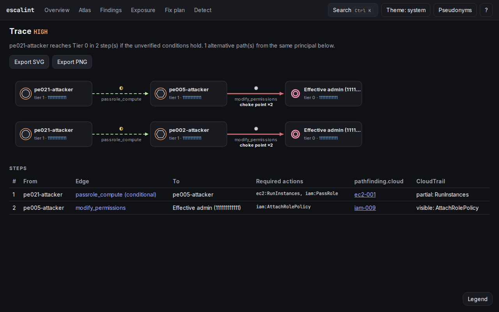
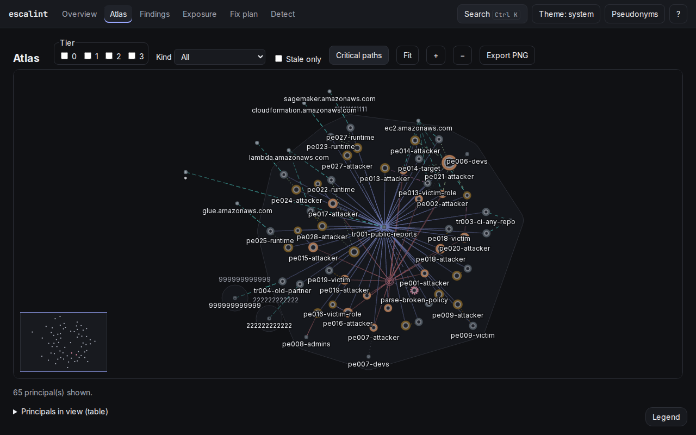
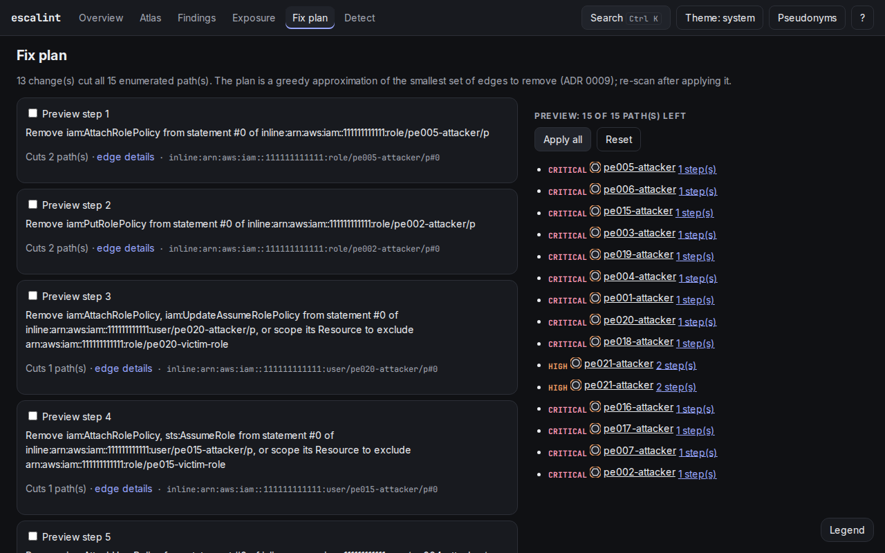

An IAM principal rarely holds AdministratorAccess directly. It holds iam:PassRole and
lambda:CreateFunction. Or iam:CreatePolicyVersion on a policy attached to itself. Or it
can assume a role whose trust policy it is allowed to rewrite. None of those policies looks dangerous
on its own. The danger is in the combination, across principals and across accounts.
This article introduces escalint, an open-source Go
tool I built to find those combinations: it reads an IAM snapshot of one or more AWS accounts, evaluates
the policies the way AWS does, builds a graph of who can act as whom and shows, visually and with an
explanation, every path that ends at administrator, along with the smallest set of changes it can find
to cut them.
There is a live demo with synthetic data that runs
entirely in your browser.
The current landscape
The offensive side is very well served
Attackers targeting AWS have modern, maintained tools. Pacu,
by Rhino Security Labs, is an exploitation framework with modules that enumerate permissions and carry
out the escalation. CloudFox, by Bishop Fox, maps an
account's attack surface from compromised credentials.
Stratus Red Team, by Datadog, emulates cloud
attack techniques mapped to MITRE ATT&CK. That ecosystem keeps up with every new service and every
newly published technique.
The defensive side, not so much
For defenders, effective-access analysis in IAM is a much weaker space:
- Prowler: the reference open-source CSPM, and rightly so. But it is broad by design: hundreds of configuration checks across several providers (public S3, open security groups, encryption, logging). Its escalation checks look at one policy at a time for dangerous action combinations. It does not answer "can this principal, by assuming that role, reach admin in two steps?".
- PMapper: NCC Group's project showed that IAM is best understood as a graph and pioneered the approach. It has not seen meaningful updates in years, and its catalog of techniques and services has fallen behind.
- CloudMapper and Cloudsplaining: Duo Labs' CloudMapper stopped in 2022. Salesforce's Cloudsplaining produces good reports on overly broad policies, but analyzes each policy in isolation and has an uncertain future.
In December 2025, Datadog published pathfinding.cloud, an open catalog of AWS privilege escalation paths. At launch, of the 65 documented paths, 27 (42%) were not detected by any open-source tool evaluated. The catalog now lists 92 paths. In other words: the attacker has a framework that runs the technique, and the defender often has nothing that flags it beforehand.
Why see paths visually
John Lambert, of Microsoft, put it well: "Defenders think in lists. Attackers think in graphs. As
long as this is true, attackers win." Active Directory went through exactly this. BloodHound started
as an offensive tool and was adopted by defense teams, because a graph of attack paths shows what no
list of findings can.
AWS IAM has the same shape. A list says "role X has iam:PassRole on *" (medium severity,
lost among two hundred others). A graph says "the CI user can launch an EC2 instance with role Y, which
can attach a policy to itself, which makes it account admin". The first is a finding; the second is a
path, with a beginning, a middle and an end, and an obvious place to cut.
Seeing the path also changes the fix. When ten paths go through the same edge, that edge is a
choke point: removing it solves ten problems at once. In a list, those ten show up as ten
unrelated items.

How it works
escalint collect (read-only) or aws iam get-account-authorization-details
│
strict snapshot parsing ─────────── untrusted data, size limits
│
IAM policy evaluator ────────────── explicit deny, SCP, RCP, boundary,
│ trust policy, cross-account; trace per decision
▼
"can act as" graph ◄──────────────── 39 rules add escalation edges
│
┌──────────┬─────────┼──────────┬──────────────┐
▼ ▼ ▼ ▼ ▼
k paths tiers blast radius choke points fix plan
to Tier 0 (greedy)
│
analysis.json ──► text · JSON · SARIF · DOT · Mermaid · embedded web UI
Faithful evaluation
The core is an evaluator that follows AWS's documented logic: explicit deny in any policy, SCPs and
RCPs by OU level, permissions boundaries, identity policies, trust policies and cross-account rules,
including NotAction, NotResource, NotPrincipal and wildcards in actions and ARNs.
Every Allow comes with a trace naming the statement that decided it. Conditions that cannot be
evaluated statically (MFA, source IP, time of day) are not dropped: the step becomes
conditional and is drawn dashed in the graph.
The graph and the rules
Nodes are principals (users, roles, groups) plus one sink per account, Tier 0 (effective
admin). Edges come from 39 rules: 30 escalation paths (EL-PE), 6 trust misconfigurations
(EL-TR, e.g. GitHub Actions OIDC without a sub condition) and 3 input diagnostics
(EL-PARSE). Every rule cites the AWS documentation, its pathfinding.cloud ID and the matching
MITRE ATT&CK techniques. The current version covers 33 of the catalog's 92 paths.
Analyses
On top of the graph, escalint computes the k shortest paths from each principal to Tier 0, privilege
tiers, blast radius, assume-role cycles, choke points and a greedy fix plan: an ordered sequence of
changes that removes every path. For each step it also says which CloudTrail events would be recorded,
or whether that step is a blind spot.
The interface
The UI is a strict-TypeScript React app with its own WebGL renderer, embedded in the binary. It runs locally with escalint serve (loopback only, with a one-time token) or as a single offline HTML file with escalint report --html. There are nine views:
- Overview: tiers, critical paths, CloudTrail blind spots and what to fix first.
- Atlas: every principal in the account (or organization), grouped by account, with semantic zoom; Shift+click two nodes to see the shortest path between them.
- Trace: one path step by step, with alternatives and choke points. Clicking an edge opens the policy explainer, with the exact statement that allowed that step.
- Reach: what a principal can reach, and who can reach it, in rings by hop.
- Exposure, Findings, Fix plan, Detect and Diff: a principal × service matrix, a filterable table, the fix plan with a live preview of the remaining paths, CloudTrail events per step and what changed between two snapshots.

Every graph has an equivalent table behind it, navigation works from the keyboard and the palettes are safe for color-vision deficiencies. Since the snapshot comes from an account that may contain hostile names and policies, the UI uses a strict CSP and never uses innerHTML, and --redact replaces every identifier with a pseudonym before a report is shared.

Hands-on
Release binaries (Linux, macOS and Windows, amd64 and arm64) ship with the UI embedded and are signed with cosign, with GitHub provenance attestations. There is also a distroless image:
# pick your platform at https://github.com/brennocm/escalint/releases
curl -sSLO https://github.com/brennocm/escalint/releases/download/v0.1.0/escalint_0.1.0_linux_amd64.tar.gz
gh attestation verify escalint_0.1.0_linux_amd64.tar.gz --repo brennocm/escalint
tar xzf escalint_0.1.0_linux_amd64.tar.gz escalint
docker run --rm -v "$PWD:/work" ghcr.io/brennocm/escalint:v0.1.0 scan /work/snapshot.jsonThe basic flow is three commands. collect only makes read calls (List* and Get*), and the repository publishes the minimal IAM policy it needs:
escalint collect -o snapshot.json # read-only snapshot with your AWS credentials
escalint serve snapshot.json # opens the UI on 127.0.0.1 with a one-time token
escalint scan snapshot.json # findings in the terminal; exit 1 on high or criticalNo credentials at hand? The repository ships example accounts. The real (abridged) scan output on the vulnerable one:
escalint scan examples/vulnerable-account/snapshot.json1 account(s), 66 node(s), 114 edge(s), 15 path(s) to Tier 0; 19 critical, 28 high, 57 medium, 2 info
arn:aws:iam::111111111111:role/pe002-attacker (role, tier 1)
path p_a9433adab2c37415 [CRITICAL, allowed, 1 step(s)]
1. arn:aws:iam::111111111111:role/pe002-attacker --[modify_permissions EL-PE-002]--> effective admin (111111111111)
CRITICAL EL-PE-002 Put an inline policy on its own role
arn:aws:iam::111111111111:role/pe002-attacker can act as effective admin of account 111111111111 using iam:PutRolePolicy
policy: inline:arn:aws:iam::111111111111:role/pe002-attacker/p statement #0 (snapshot line 766)
ATT&CK: T1098.003 Account Manipulation: Additional Cloud Roles
fix: Remove iam:PutRolePolicy from the role's policies, or scope its Resource to roles other than itself
and add a permissions boundary that denies it.
arn:aws:iam::111111111111:role/tr002-ci-deploy (role, tier 3)
CRITICAL EL-TR-002 GitHub Actions OIDC trust without a sub condition
any GitHub Actions workflow, in any repository, can assume arn:aws:iam::111111111111:role/tr002-ci-deploy:
the trust has no condition on token.actions.githubusercontent.com:sub
policy: trust:arn:aws:iam::111111111111:role/tr002-ci-deploy statement #0 (snapshot line 1170)
ATT&CK: T1199 Trusted Relationship; T1078.004 Valid Accounts: Cloud AccountsEach finding points to the policy and the snapshot line that cause it, the ATT&CK techniques and a concrete fix. Exit codes make escalint usable as a gate: 0 no findings above --fail-on (default high), 1 findings and 2 usage error.
In CI
The use case I care about most is stopping a new path from appearing unnoticed. escalint diff
compares two snapshots and fails only on added edges, paths and findings. The repository ships a
GitHub Action that, in a daily job, collects with a read-only role through OIDC, compares with
yesterday's snapshot and uploads the result as SARIF to GitHub Code Scanning:
escalint diff baseline.json snapshot.json --fail-on high
escalint scan snapshot.json --format sarif --output escalint.sarifWhere escalint fits
escalint does not replace any of the tools above. Prowler is still the place for overall account
posture; escalint deliberately ignores public buckets and open security groups. Pacu and CloudFox are
still the place for exploitation and offensive validation; escalint never assumes roles, never creates
credentials and never changes anything in the account.
The space it fills is PMapper's: defensive, static, explainable effective-access analysis for IAM, now
with SCPs and RCPs, an up-to-date catalog mapped to pathfinding.cloud, CI-ready output and an interface
designed so the defender sees the graph the attacker already sees. The idea of a self-hosted graph where
no data leaves the account came from
aws-iam-graph, by marcelogsantos;
escalint is a from-scratch reimplementation.
Limitations
v1 does not model session policies and session tags, resource-based policies other than role trust
(S3 bucket policies, KMS key policies, Lambda, Secrets Manager), root users or IAM Identity Center
assignments. Request conditions cannot be known statically, so the affected steps stay
conditional. Coverage is 33 of pathfinding.cloud's 92 paths; most of the rest pass a role to
another compute service and follow the same template as the existing rules. The resource inventory is
regional, the fix plan is greedy (small, not guaranteed minimal) and a snapshot is a point in time: after
changes, collect again.
One important caveat: snapshots and reports are, quite literally, a map of who can become
administrator. Treat them as sensitive data and share them only with --redact.
Final thoughts
IAM privilege escalation is rarely one obviously wrong policy. It is a sum of reasonable permissions,
spread across different principals and accounts, that nobody reviewed together. Attackers have tools to
find and walk that sum; defenders, most of the time, have a list.
escalint tries to even that out: evaluate policies the way AWS does, draw the graph, explain every edge
with the statement that allows it and say where to cut. It is no guarantee that an account is safe, but
it is a way to look at IAM the same way whoever attacks it will.